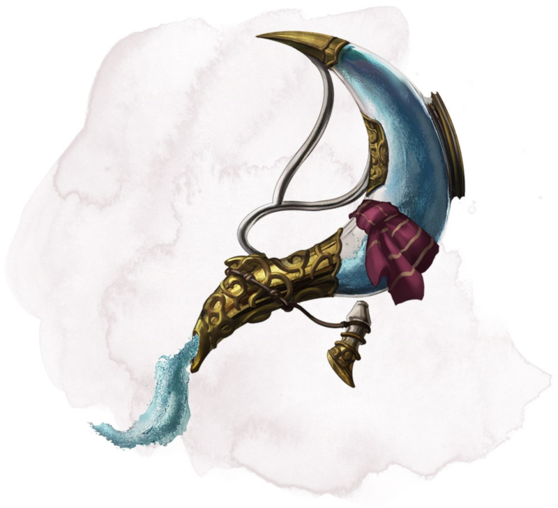

Decanter of Endless Water
Wondrous item, uncommon
This stoppered flask sloshes when shaken, as if it contains water. The decanter weighs 2 pounds.
You can use an action to remove the stopper and speak one of three command words, whereupon an amount of fresh water or salt water (your choice pours out of the flask. The water stops pouring out at the start of your next turn. Choose from the following options:
• "Stream" produces 1 gallon of water.
• "Fountain" produces 5 gallons of water.
• "Geyser" produces 30 gallons of water that gushes forth in a geyser 30 feet long and 1 foot wide. As a bonus action while holding the decanter, you can aim the geyser at a creature you can see within 30 feet of you. The target must succeed on a DC 13 Strength saving throw or take 1d4 bludgeoning damage and fall prone. Instead of a creature, you can target an object that isn't being worn or carried and that weighs no more than 200 pounds. The object is either knocked over or pushed up to 15 feet away from you.
You can use an action to remove the stopper and speak one of three command words, whereupon an amount of fresh water or salt water (your choice pours out of the flask. The water stops pouring out at the start of your next turn. Choose from the following options:
• "Stream" produces 1 gallon of water.
• "Fountain" produces 5 gallons of water.
• "Geyser" produces 30 gallons of water that gushes forth in a geyser 30 feet long and 1 foot wide. As a bonus action while holding the decanter, you can aim the geyser at a creature you can see within 30 feet of you. The target must succeed on a DC 13 Strength saving throw or take 1d4 bludgeoning damage and fall prone. Instead of a creature, you can target an object that isn't being worn or carried and that weighs no more than 200 pounds. The object is either knocked over or pushed up to 15 feet away from you.
Dungeon Master´s Guide (SRD)
